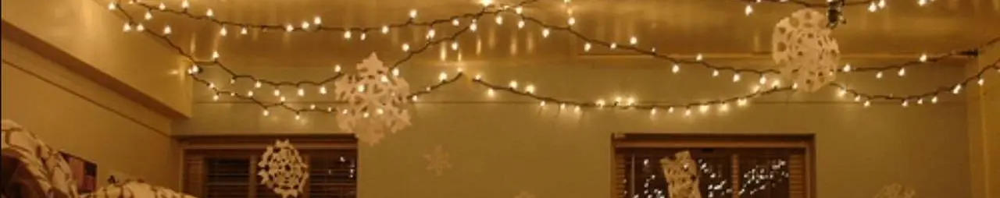

Lampu Tumbler: Hiasan Estetik yang Hemat Listrik untuk Kamar Anda
Dipublikasikan pada 21 Oktober 2025

Kalau Anda sedang mencari inspirasi desain interior untuk kamar kos, ruang baca, atau sudut foto di rumah, Anda mungkin sudah pernah melihat lampu tumbler. Lampu ini juga sering digunakan di sudut-sudut kafe untuk menciptakan suasana yang hangat dan estetik. Bentuknya yang unik seringkali diletakkan di dalam toples kaca atau dipasang di antara tanaman plastik, menciptakan efek visual yang menawan.
Mengapa Lampu Tumbler Sangat Populer?
Lampu tumbler memiliki ciri khas berupa titik-titik cahaya kecil menyerupai bintang yang dirangkai pada kabel tipis mirip kawat. Lampu ini mudah ditemukan, baik di toko online maupun offline, dengan harga yang relatif terjangkau.
Bentuknya yang simpel, kabelnya yang fleksibel, dan cara pemasangannya yang mudah membuat lampu tumbler menjadi pilihan favorit untuk mempercantik ruangan tanpa perlu dekorasi yang rumit.
Keunggulan dan Efisiensi Lampu Tumbler
Salah satu keunggulan utama lampu tumbler adalah fleksibilitas sumber dayanya. Lampu ini bekerja dengan arus DC, yang artinya bisa ditenagai oleh powerbank. Cukup colokkan konektor USB-nya ke powerbank dan lampu akan langsung menyala.
Selain itu, konsumsi daya lampu tumbler sangat kecil, hanya sekitar 100 miliampere per roll dengan tegangan 5 Volt. Ini menjadikannya sangat hemat energi dan relatif aman saat dipegang. Karena tidak menghasilkan panas berlebih dan lentur, lampu tumbler juga sering digunakan sebagai aksesoris pada kostum cosplay.
Dengan semua keunggulan ini—mulai dari hemat daya, harga terjangkau, hingga desain yang fleksibel—tidak heran jika lampu tumbler banyak digunakan untuk menghias berbagai ruang, baik untuk keperluan pribadi maupun bisnis seperti kafe dan studio foto.
Jika Anda ingin menambah sentuhan hangat dan estetik di rumah, lampu tumbler bisa menjadi pilihan dekorasi yang tepat.
Video singkat tentang uji arus dan tegangan lampu tumbler bisa Anda lihat di bawah ini. Semoga tips ini bermanfaat untuk ide dekorasi Anda!